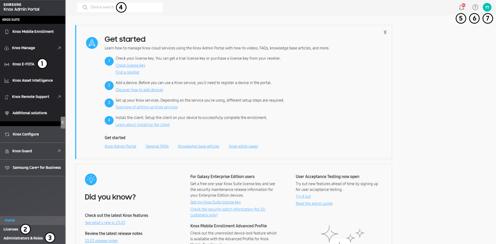
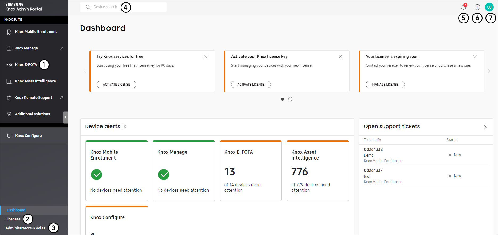

On this tab
The Knox Admin Portal is the hub for all your Knox services, designed to provide a cohesive user experience. Understanding the benefits of the Knox Admin Portal can help streamline your device management operations and help you manage your resources across services more easily.
In this section, we’ll cover how to:
- Get access to the portal
- Select your Knox services
- Navigate the homepage
- Get started using the portal
Get access to the portal
Before you can start using the Knox Admin Portal, you first need to sign up for a Samsung Knox account, which requires a Samsung account. If you don’t already have a Samsung account, you’ll be able to create one later.
To sign up for a Samsung Knox account:
Go to SamsungKnox.com.
In the top-right corner, click Enroll.
Under Work email, enter the email address you use for work.
If you already have a Samsung account associated with your work email, you’re asked to sign in to your Samsung account.
If you don’t have a Samsung account yet, you’re taken to the Samsung account sign up page to create one. Follow the account creation steps as directed.
After you successfully verify your Samsung account with the PIN sent to your email, you’re redirected back to the Samsung Knox portal to complete your registration. Check that the details shown are correct, then click NEXT.
Fill in your company information, then click NEXT.
Review the Samsung Knox agreements, select the applicable boxes, then click SUBMIT.
Your application is then submitted to the Samsung Knox team for approval, which may take a few days. You’ll receive an email once you’re approved. When you sign in after approval, you’re then automatically taken to the Knox Admin Portal.
Select your Knox services
When you first sign in to the Knox Admin Portal, you’re greeted with a welcome screen that guides you through the steps to set up the portal.
Then, you’re prompted to select the Knox services you want to use. The services you select define which consoles you see in the portal. Some services are already selected based on the services you were approved for, but you can always show or hide services later. Depending on the additional services you select, you might need to acknowledge some terms and conditions or privacy policies to continue.
Once you confirm your selection, the Knox Admin Portal shows the services you chose in the navigation pane. You can now seamlessly access Knox service features. You’ll only receive system emails for the services you selected.
Navigate the homepage
By default, you’ll see a homepage upon sign-in to the Knox Admin Portal. This homepage contains resources you might find handy when using Knox services, including quick links to learn more about new features, additional services, and helpful tools.
In particular, the homepage includes links to:
- The latest release notes
- Submit or view support tickets
- Get premium technical support
A Get started dialog also provides links to learn how to use Knox cloud services, along with general help links to enhance your Knox Admin Portal experience. You can hide this dialog and re-open it anytime by clicking > Get started.
You can also customize what you see when you sign in—choose between the default homepage or the dashboard of a preferred service. If you set the landing page to be a service-specific dashboard, you won’t immediately see the homepage when you sign in anymore. See Customize the portal to learn more.
Get started using the portal
Now that you’ve set up the Knox Admin Portal, you’re ready to start exploring what the portal and its associated Knox services have to offer. The following diagram highlights several key elements of the Knox Admin Portal.

- The navigation pane, through which you can seamlessly access your Knox services and their features.
- The Licenses page, where you can view and manage your licenses. See Manage Knox licenses for more details.
- The Administrators & Roles page, where you can manage admins and roles for your services. See Manage admins and roles for Knox services for more details.
- The device search bar, where you can search for a device across all services by its unique identifier.
- The notification center, where you can see notifications from all your Knox services.
- The support center, where you can get technical support and view the admin guides.
- The account icon, which hosts your customer ID, Knox account settings, and settings for the Knox Admin Portal and each service.
We’ve also put together a general tutorial to walk you step-by-step through how to get started, which includes links to admin guides for other services. You can refer to each service’s admin guide for more details on how to get started.
In the tutorial, you’ll:
- Learn how to check your licenses
- Add and enroll devices
- Set up Knox services you’ve selected
This document was updated for the Knox cloud services 23.09 UAT.
On this tab
The Knox Admin Portal is the hub for all your Knox services, designed to provide a cohesive user experience. Understanding the benefits of the Knox Admin Portal can help streamline your device management operations and help you manage your resources across services more easily.
In this section, we’ll cover how to:
- Get access to the portal
- Select your Knox services
- Navigate the dashboard
- Get started using the portal
Get access to the portal
Before you can start using the Knox Admin Portal, you first need to sign up for a Samsung Knox account, which requires a Samsung account. If you don’t already have a Samsung account, you’ll be able to create one later.
To sign up for a Samsung Knox account:
Go to SamsungKnox.com.
In the top-right corner, click Enroll.
Under Work email, enter the email address you use for work.
If you already have a Samsung account associated with your work email, you’re asked to sign in to your Samsung account.
If you don’t have a Samsung account yet, you’re taken to the Samsung account sign up page to create one. Follow the account creation steps as directed.
After you successfully verify your Samsung account with the PIN sent to your email, you’re redirected back to the Samsung Knox portal to complete your registration. Check that the details shown are correct, then click NEXT.
Fill in your company information, then click NEXT.
Review the Samsung Knox agreements, select the applicable boxes, then click SUBMIT.
Your application is then submitted to the Samsung Knox team for approval, which may take a few days. You’ll receive an email once you’re approved. When you sign in after approval, you’re then automatically taken to the Knox Admin Portal.
Select your Knox services
When you first sign in to the Knox Admin Portal, you’re greeted with a welcome screen that guides you through the steps to set up the portal.
Then, you’re prompted to select the Knox services you want to use. The services you select define which consoles you see in the portal. Some services are already selected based on the services you were approved for, but you can always show or hide services later. Depending on the additional services you select, you might need to acknowledge some terms and conditions or privacy policies to continue.
Once you confirm your selection, the Knox Admin Portal shows the services you chose in the navigation pane. You can now seamlessly access Knox service features. You’ll only receive system emails for the services you selected.
Navigate the dashboard
By default, you’ll see a dashboard upon sign-in to the Knox Admin Portal. This dashboard contains resources you might find handy when using Knox services, including links to learn more about new features, additional services, and helpful tools. Learn more about the Knox Admin Portal dashboard
A Get started dialog also provides links to learn how to use Knox cloud services, along with general help links to enhance your Knox Admin Portal experience. You can hide this dialog and re-open it anytime by clicking > Get started.
You can also customize what you see when you sign in—choose between the default dashboard or the dashboard of a preferred service. If you set the landing page to be a service-specific dashboard, you won’t immediately see the Knox Admin Portal dashboard when you sign in anymore. See Customize the portal to learn more.
Get started using the portal
Now that you’ve set up the Knox Admin Portal, you’re ready to start exploring what the portal and its associated Knox services have to offer. The following diagram highlights several key elements of the Knox Admin Portal.

- The navigation pane, through which you can seamlessly access your Knox services and their features.
- The Licenses page, where you can view and manage your licenses. See Manage Knox licenses for more details.
- The Administrators & Roles page, where you can manage admins and roles for your services. See Manage admins and roles for Knox services for more details.
- The device search bar, where you can search for a device across all services by its unique identifier.
- The notification center, where you can see notifications from all your Knox services.
- The support center, where you can get technical support, find helpful resources, and view the admin guides. You can also check the operational status and version of Knox services here.
- The account icon, which hosts your customer ID, Knox account settings, and settings for the Knox Admin Portal and each service.
We’ve also put together a general tutorial to walk you step-by-step through how to get started, which includes links to admin guides for other services. You can refer to each service’s admin guide for more details on how to get started.
In the tutorial, you’ll:
- Learn how to check your licenses
- Add and enroll devices
- Set up Knox services you’ve selected
Is this page helpful?
Thank you for your feedback!